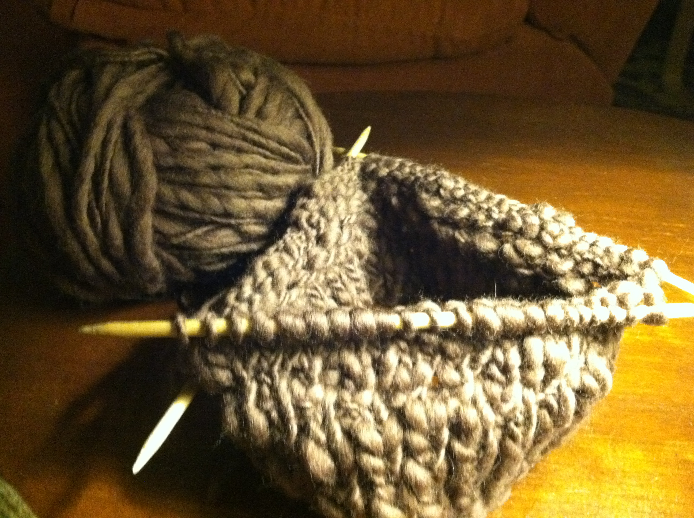

No, no, no. This is not some macho how to knit like a man tutorial. So if you were looking to make some gross black and gold scarf to wear on Steelers game day with arcylic yarn (gross) you'll have to look elsewhere.
My goal is to help you create simple, sturdy and timeless pieces. There are lots of great websites that will teach you how to knit, so I won't be covering that. I'm going to teach you little tricks and point out details that will give you mad style points.